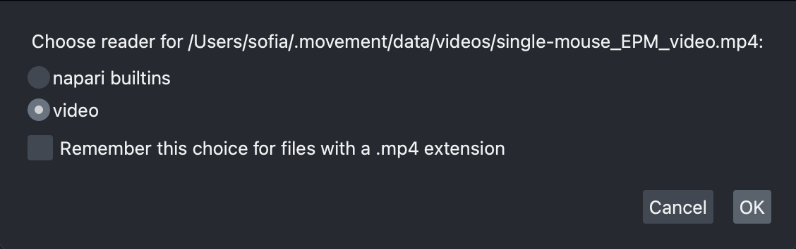

Graphical User Interface#
The movement graphical user interface (GUI), powered by our custom plugin for
napari, makes it easy to view and explore movement
motion tracks. Currently, you can use it to
visualise 2D movement datasets
as points, tracks, and rectangular bounding boxes (if defined) overlaid on video frames.
Warning
The GUI is still in early stages of development but we are working on ironing out the kinks. Please get in touch if you find any bugs or have suggestions for improvements!
The napari plugin is shipped with the movement package starting from
version 0.1.0. To use it, you need to
install the package with a method that
includes the napari dependency.
Launch the GUI#
To launch the movement GUI, type the following command in your terminal:
movement launch
This is equivalent to running napari -w movement and will open the napari
window with the movement widget docked on the
right-hand side, as in the screenshot below.
In napari, data is typically loaded into layers,
which can be reordered and toggled for visibility in the layers list panel.
For example, keypoint data can be added as a
points layer or a tracks layer,
while image stacks (including videos) can be added as
image layers.
Below, we’ll explain how to do this.
Load a background layer#
Though this is not strictly necessary, it is usually informative to
view the keypoints overlaid on a background that provides
some spatial context. You can either load the video
corresponding to the dataset, or load a single image (e.g., a still frame derived from that video).
You can do this by dragging and dropping the corresponding video or image file onto the
napari window or by using the File > Open File(s) menu option.
Load a video#
Upon loading a video file into napari, you will be prompted
via a pop-up dialog to select the reader.
Choose the video reader—corresponding to the
napari-video
plugin—and click OK. You can optionally select to remember this reader
for all files with the same extension.

napari-video will load the video as an image stack with a slider
at the bottom that you can use to navigate through frames.
You may also use the left and right arrow keys to navigate
frame-by-frame.

Clicking on the play button will start the video playback at a default
rate of 10 frames per second. You can adjust the playback speed by right-clicking on the
play button, or by opening the napari > Preferences menu
(File > Preferences on Windows) and changing
the Playback frames per second setting.
Video playback limitations
The video playback may freeze or stutter if you jump to a specific frame while the video is playing. We recommended pausing the playback first.
napari-videomay struggle to play videos at a high frame rate, depending on your hardware, the video resolution and codec. If you experience performance issues, such as the video freezing or skipping frames, try reducing the playback speed or fall back to using a single image as a background.
Load an image#
This usually means using a still frame extracted from the video, but in theory you could use any image that’s in the same coordinate system as the tracking data. For example, you could use a schematic diagram of the arena, as long as it has the same width and height as the video and is properly aligned with the tracking data.
Extracting a still frame from a video
You can use the command line tool ffmpeg
to extract a still frame from a video.
To extract the first frame of a video:
ffmpeg -i video.mp4 -frames:v 1 first-frame.png
To extract a frame at a specific time stamp (e.g. at 2 seconds):
ffmpeg -i video.mp4 -ss 00:00:02 -frames:v 1 frame-2sec.png
Dragging and dropping the image file onto the napari window
(or opening it via the File menu) will load the image
as a single 2D frame without a slider.
Load the tracked dataset#
Now you are ready to load some motion tracks over your chosen background layer.
On the right-hand side of the window you should see
an expanded Load tracked data menu. You can load data from
one of the supported third-party formats
or from a netCDF file saved with movement
(expand the dropdown below for the precise requirements).
netCDF files compatible with the GUI
Only netCDF files that store a valid movement dataset can be opened in the GUI. Practically, this means:
The dataset’s
ds_typeattribute must be set toposesorbboxes.The data variables, dimensions, and coordinates must satisfy the dataset structure requirements for that
ds_type. For example, aposesdataset must provide bothpositionandconfidence.
Below is a small example showing how to save a GUI-compatible
netCDF file with movement:
from movement.io import load_poses
from movement.filtering import rolling_filter
ds_orig = load_poses.from_file(
"path/to/my_data.h5", source_software="DeepLabCut", fps=30
)
# Create a copy to avoid modifying the original dataset
ds_new = ds_orig.copy()
# Apply some processing to the position data variable.
# e.g. a rolling median filter
ds_new["position"] = rolling_filter(
ds_orig["position"], window=5, statistic="median"
)
# Save the processed dataset to a netCDF file
ds_new.to_netcdf("my_data_processed.nc")
Because ds_new is copied from the original dataset, it retains all required
attributes and structure. Note that the data variable remains named position
after processing, as expected.
To load tracked data in napari:
From the
source softwaredropdown menu select the name of the tracking software you used to generate the data (e.g. “DeepLabCut”), or choose “movement (netCDF)”.Set the
fps(frames per second) of the video the data refers to. This only changes the time units shown when you hover over a keypoint. An unknownfpscan be set to1, which makes the displayed time equal to the frame index. Thefpsoption is disabled when loading a netCDF file because thefpsis directly read from the file’s attributes.Select the file containing the tracked data. You can paste the path to the file directly in the text box, or you can use the file browser button.
Click
Load.
The data will be loaded into the viewer as a points layer and as a tracks layer. If the input file is a bounding boxes dataset, an additional napari shapes layer is loaded. By default, the data is added at the top of the layer list and the points layer is selected.
For a poses dataset, you will see a view similar to this:

And for a bounding boxes dataset, you will see a view more like the one below:

Note the additional bounding boxes layer that is loaded for bounding boxes datasets. For both poses and bounding boxes datasets, you can toggle the visibility of any of these layers by clicking on the eye icon.
The points layer#
The points layer shows the data for the current frame.
The keypoints are represented as points, colour-coded by keypoint for single-individual datasets, or by individual for multi-individual datasets. In datasets with one keypoint per individual, or no keypoint dimension, the points are always colour-coded by individual.
With the points layer selected,
if we enable the display_text option in the
layer controls panel, the keypoint name will be displayed on the lower right corner of each point. If the
dataset has no keypoint dimension, the individual name is shown instead.
Hovering with your mouse over a point
(with the points layer selected) will
bring up a tooltip containing the properties of that point: the individual and keypoint it represents,
the point-wise confidence score (provided by the source software),
and the time in seconds (calculated based on the frame number and
the fps value).

Using the frame slider at the bottom of the window, you can move through the frames of the dataset, and the points and video (if loaded) will update in sync.
Changing markers size, colour and shape
You can change the size, the colour and the shape of any selected markers using the points layer controls panel.
You can use the following keyboard shortcuts to toggle the markers selection:
To select all the markers in the current frame, press
A.To select all the markers in all the loaded frames, press
Shift + A.To unselect the currently selected markers, press the relevant keyboard shortcut again.
You can find all the keyboard shortcuts in the top menu of the
napari window, under Preferences > Shortcuts.
The tracks layer#
The tracks layer allows us to visualise data before and after the current frame. Remember that the current frame is determined by the position of the frame slider.
The trajectory made up of all positions of a keypoint on all frames before the current frame is called tail. Similarly, its trajectory on all frames after the current frame is called head.
Both tail and head tracks are represented as lines connecting a single keypoint across frames. The colour of the tracks follows
the colour of the markers, and the length of the tracks can be adjusted in the
tracks layer controls panel, with the tail length and head length sliders.
When the tail length slider is at its maximum position, the tail track show the trajectory of the
keypoints from the start of the video until the current frame. When the head length slider is at its maximum position,
the head track shows the trajectory of the keypoints from the current frame until the end of the video.
For example, in the screenshot below, we can see from the tracks layer control panel that the selected layer shows the trajectories of the keypoints from the current frame until the end of the video.

You can also use the tracks layer controls panel to change the colormap of a selected tracks layer.
Some caveats regarding the tracks layer
Currently there is no support in
naparifor fine control over the length of the tail and head tracks. However, we are working on a workaround, stay tuned!You may occasionally see a warning message in the GUI upon loading a datafile, that says:
UserWarning: Previous color_by key 'keypoint_factorized' not present in features. Falling back to track_id!
This is a known issue and can be safely ignored. It does not currently affect the functionality of the GUI.
Also note that currently the
show IDcheckbox in the tracks layer controls panel refers to an internal napari track ID, rather than the individual or the keypoint ID. This is a known issue and we are working on a fix or workaround.
The boxes layer#
The boxes layer is loaded for bounding boxes datasets only. It shows the bounding boxes for the current frame, as rectangles color-coded by individual.
The name of the individual is shown in the lower left of the bounding box by default. This can be toggled by selecting the shapes layer in the layer list and clicking the display text checkbox in the layer controls panel.
As with tracks and points, you can use the frame slider at the bottom of the viewer to move through the frames of the dataset. This will update the bounding boxes and the rest of the loaded data in sync.
Changing bounding box size, colour and shape
You can change edge and face colour as well as the positions of a bounding box’s corner vertices using the shapes layer controls panel.
You can use the following keyboard shortcuts to toggle the bounding boxes selection:
To select all the bounding boxes in the current frame, enable the select shapes tool (
5orS) and pressA.To deselect, click off of the bounding boxes.
Individual vertices can be selected instead of the entire rectangle using the select vertex tool:
4orD.
You can find all the keyboard shortcuts in the top menu of the
napari window, under Preferences > Shortcuts.